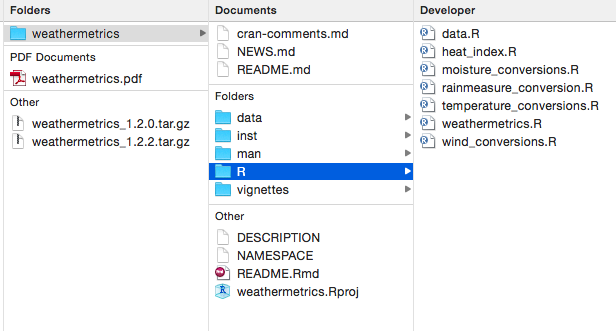
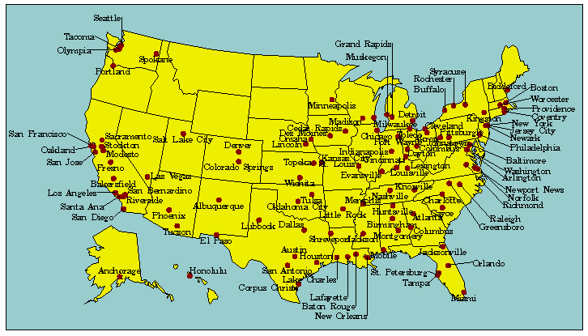
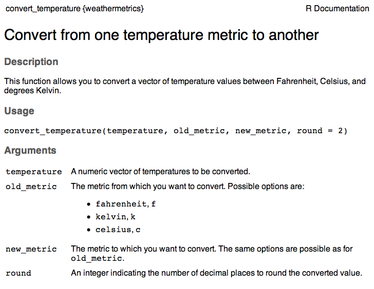
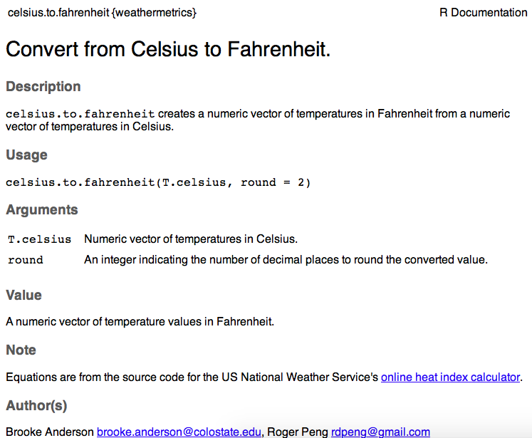
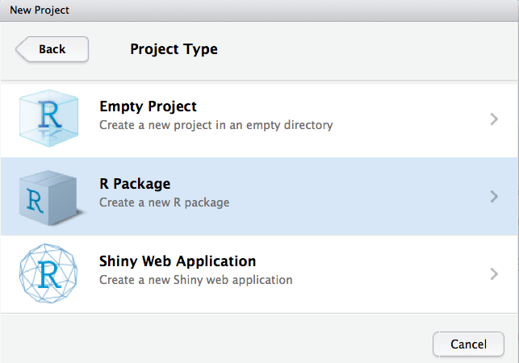
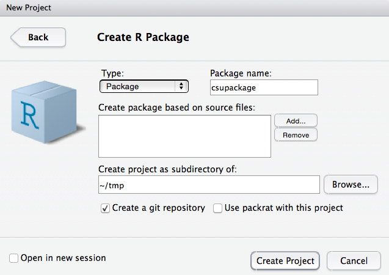
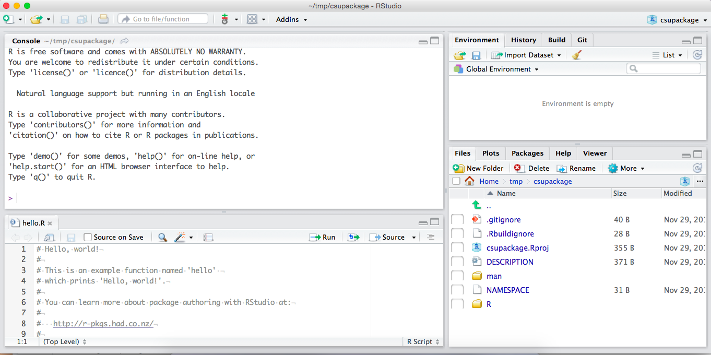

Chapter 13 Reproducible research #3
Download a pdf of the lecture slides covering this topic.
13.1 Overview of R packages
13.1.1 What is an R package?
- From Writing R Extensions: “A directory of files which extend R”.
- Files bundled together using
tarand compressed usinggzip. The file extension is.tar.gz. These are the source files for the package, which then must be installed from this source code locally prior to use. - Sometimes also called an extension of R.
Example R package:

You can also have “binary packages” for a certain operating system. From Writing R Extensions:
A binary package is “a zip file or tarball containing the files of an installed package which can be unpacked rather than installing from sources.”
Consider developing software when:
- You have developed a new method you want to share
- You have data you’d like to make publicly available
- You find yourself doing the same task repeatedly
Why create an R package?
- Share some functions broadly
- Share some functions with a small group
- Create a version of code for yourself that’s more organized and easier to use
- Includes documentation (vignettes, help files)
- Function names linked to package namespace
- Once library is installed, can load easily
13.1.2 Example: NMMAPS package
 Source: www.ihapss.jhsph.edu
Contents of NMMAPS package:

Research impacts of NMMAPS package (Source: Barnett, Huang, and Turner, “Benefits of Publicly Available Data”, Epidemiology 2012):
- As of November 2011, 67 publications had been published using this data, with 1,781 citations to these papers
- Research using NMMAPS has been used by the US EPA in creating regulatory impact statements for air pollution (particulates and ozone)
- “Thanks to NMMAPS, there is probably no other country in the world with a greater understanding of the health effects of air pollution and heat waves in its population.”
13.1.4 Package names
The format requirements for a package name are, based on Writing R Extensions:
“This should contain only (ASCII) letters, numbers and dot, have at least two characters and start with a letter and not end in a dot.”
Hadley Wickham’s additional guidelines:
- Make it easy to Google.
- Make it all uppercase or all lower case
- Base it on a word that’s easy to remember, but then tweak the spelling to make it unique (and easier to Google).
- Abbreviate.
- Add an “r”.
13.1.5 Package maintainer
A package can have many authors, but only one maintainer. The maintainer is in charge of fixing any problems that come up with CRAN checks over time to keep the package on CRAN. The maintainer is also the person who will be emailed about bugs, etc., by other users.
The package can have other authors, as well as people in other roles (e.g., contributor). See the helpfile for the person function for more on the codes used for different roles.
13.1.6 Find out more
To find out more about writing R packages, useful sources are:
- Writing R Extensions: Guidelines for R packages from the R Core Team.
- R Packages by Hadley Wickham
- R package development cheatsheet
13.2 Basic example package: weathermetrics

The key functions in this package are:
convert_temperature: Convert between temperature metricsconvert_precip: Convert between precipitation metricsconvert_wind_speed: Convert between wind speed metricsheat.index: Calculates heat index from air temperature and a measure of air moisture (dew point temperature or relative humidity)
13.2.1 Contents of weathermetrics package
Equation to convert from Celsius to Fahrenheit:
\[ T_F = \frac{9}{5} T_C + 32 \] Here is the associated R function:
## function (T.celsius, round = 2)
## {
## T.fahrenheit <- (9/5) * T.celsius + 32
## T.fahrenheit <- round(T.fahrenheit, digits = round)
## return(T.fahrenheit)
## }
## <bytecode: 0x7fa0ca209c38>
## <environment: namespace:weathermetrics>Here is part of the help file for this function:

Here is the start of the function to calculate the heat index:
##
## 1 function (t = NA, rh = NA)
## 2 {
## 3 if (is.na(rh) | is.na(t)) {
## 4 hi <- NA
## 5 }
## 6 else if (t <= 40) {
## 7 hi <- t
## 8 }
## 9 else {
## 10 alpha <- 61 + ((t - 68) * 1.2) + (rh * 0.094)Here is an example of using this function:
data(suffolk)
suffolk %>%
mutate(heat_index = heat.index(t = TemperatureF,
rh = Relative.Humidity)) %>%
slice(1:5)## Date TemperatureF Relative.Humidity heat_index
## 1 1998-07-12 72 69 72
## 2 1998-07-13 73 66 73
## 3 1998-07-14 74 74 75
## 4 1998-07-15 78 86 80
## 5 1998-07-16 78 100 8113.3 Elements of an R package
13.3.1 Basic elements
Things you edit directly:
- DESCRIPTION file: The package’s “Title page”. Metadata on the package, including names and contacts of authors, package name, and description. This file also lists all the package dependencies (other packages with functions this package uses).
Rfolder: R code defining functions in the package. All code is included in one or more R scripts. If you use Roxygen for help with documentation, all of that is also included in these files.
Things that are automatically written:
manfolder: Help documentation for each function. This files are automatically rendered if you use Roxygen.- NAMESPACE file: Helps R find functions in your package you want others to use.
13.3.2 DESCRIPTION file
Required elements:
- Package: Name of the package
- Version: Number of the current version of the package (e.g., 0.1.0)
- Title: Short title for the package, in title case and in 65 characters or less.
- Author and Maintainer (these two sections can be replaced with Authors@R section that uses the
personfunction) - Description: Paragraph describing the package
- License: Name of the license the package is under. If necessary, you can also refer to a LICENSE file included as another file in the package. Only some licenses are easily accepted by CRAN.
Other elements that are common but not required:
- Date: Release date of this version of the package.
- Imports: A list of the packages on which this package depends: other packages with functions used by the code in this package.
- URL: If there is a webpage associated with the package, the address for it. Often, this is the web address of the package’s GitHub repository.
- BugReports: Where users can submit problems they’ve had. Often, the web address of the “Issues” page of the GitHub repository for the package.
Package: weathermetrics
Type: Package
Title: Functions to Convert Between Weather Metrics
Version: 1.2.2
Date: 2016-05-19
Authors@R: c(person("Brooke", "Anderson",
email = "brooke.anderson@colostate.edu",
role = c("aut", "cre")),
person("Roger", "Peng",
email = "rdpeng@gmail.com", role = c("aut")),
person("Joshua", "Ferreri",
email = "joshua.m.ferreri@gmail.com", role = c("aut")))
Description: Functions to convert between weather metrics,
including conversions for metrics of temperature, air
moisture, wind speed, and precipitation. This package also
includes functions to calculate the heat index from
air temperature and air moisture.
URL: https://github.com/geanders/weathermetrics/
BugReports: https://github.com/geanders/weathermetrics/issues
License: GPL-2
LazyData: true
RoxygenNote: 5.0.1
Depends:
R (>= 2.10)
Suggests: knitr,
rmarkdown
VignetteBuilder: knitr13.3.3 R folder
The R folder of the package includes:
- R scripts with code defining all functions for the package
- Help documentation for each function (if using Roxygen)
- Help documentation for the package data in “data.R”
You define functions in the R scripts just as you would anytime you want to define a function in R. For example, “temperature_conversions.R” includes the following code to define converting from Celsius to Fahrenheit:
celsius.to.fahrenheit <- function (T.celsius, round = 2) {
T.fahrenheit <- (9/5) * T.celsius + 32
T.fahrenheit <- round(T.fahrenheit, digits = round)
return(T.fahrenheit)
}Only exception: use package::function syntax to call functions from other packages (e.g., dplyr::mutate()).
Using roxygen2, you put all information for the help files directly into a special type of code comments right before defining the function.
- Start each line with
#'. - To render into help files, use the
documentfunction from thedevtoolspackage. - This will write out help files in the
manfolder of the package. - Use these comments to specify which functions should be exported from the package using the
@exporttag. This information will be used to render the NAMESPACE file for the package.
#' Convert from Celsius to Fahrenheit.
#'
#' \code{celsius.to.fahrenheit} creates a numeric vector of
#' temperatures in Fahrenheit from a numeric vector of
#' temperatures in Celsius.
#'
#' @param T.celsius Numeric vector of temperatures in Celsius.
#' @inheritParams convert_temperature
#'
#' @return A numeric vector of temperature values in Fahrenheit.
#'
#' @note Equations are from the source code for the US National
#' Weather Service's
#' \href{http://www.wpc.ncep.noaa.gov/html/heatindex.shtml}
#' {online heat index calculator}.
#' @author
#' Brooke Anderson \email{brooke.anderson@@colostate.edu},
#' Roger Peng \email{rdpeng@@gmail.com}
#'
#' @seealso \code{\link{fahrenheit.to.celsius}}
#'
#' @examples # Convert from Celsius to Fahrenheit.
#' data(lyon)
#' lyon$TemperatureF <- celsius.to.fahrenheit(lyon$TemperatureC)
#' lyon
#'
#' @exportSome of the most common tags you’ll use for roxygen2 are:
@param: Use to explain parameters for the function.@inheritParam: If you have already explained a parameter for the help file for a different function, you can use this tag to use the same definition for this function.@return: Explanation of the object returned by the function.@examples: One or more examples of using the function.@export: Export the function, so it’s available when users load the package.
By default, the first line in the roxygen2 comments is the function title and the next section is the function description. For more on roxygen2, see: https://cran.r-project.org/web/packages/roxygen2/vignettes/roxygen2.html
Once you run document, this is all rendered as a help file. Now, when you run ?celsius.to.fahrenheit, you’ll get:

The start of the NAMESPACE file will be automatically written when you run document and will look like:
# Generated by roxygen2: do not edit by hand
export(celsius.to.fahrenheit)
export(celsius.to.kelvin)
export(convert_precip)
export(convert_temperature)
export(convert_wind_speed)
export(dewpoint.to.humidity)If you are automating helpfile documentation, you must also include an R script with the doumentation for each data set that comes with the package.
This file will include roxygen2 documentation for each data set, followed by the name of the dataset in quotation marks.
As an example, the next slide has the documentation in the “data.R” file for the “lyon” data set.
#' Weather in Lyon, France
#'
#' Daily values of mean temperature (Celsius) and mean dew
#' point temperature (Celsius) for the week of June 18, 2000,
#' in Lyon, France.
#'
#' @source \href{http://www.wunderground.com/}
#' {Weather Underground}
#'
#' @format A data frame with columns:
#' \describe{
#' \item{Date}{Date of weather observation}
#' \item{TemperatureC}{Daily mean temperature in Celsius}
#' \item{DewpointC}{Daily mean dewpoint temperature in
#' Celsius}
#' }
"lyon"13.3.4 Other common elements
Some other elements, while not required, are common in many R packages:
datafolder: R objects with data that goes with the package. Often, these are small-ish data files for examples of how to use package functions. However, more “scientific” packages may include more substantive data in this folder. Some packages are created solely to deliver data.vignettesfolder: One or more tutorials on why the package was created and how to use it. These can be written in RMarkdown.- NEWS file: Information about changes in later versions of the package.
- .Rbuildignore file: Lists files and directories that should not be included in the package build
- LICENSE file: With certain licenses (MIT is a common example), you need a separate LICENSE file, to supplement the license information in the DESCRIPTION file.
13.3.5 Less common elements
srcfolder: Sources and headers for compiled code (e.g., C++).demofolder: R scripts that give demonstrations of using the package.testsfolder: Test code for the package. Currently, the best way to create tests for a package are with thetestthatpackage.instfolder: Various and sundries, including a CITATION file to tell others how to cite your package and executable scripts not in R (e.g., shell scripts, Perl or Python code).
13.4 Creating an R package
Invaluable tools when creating an R package:
- The
devtoolspackage: Various utility functions that help you develop an R package. - R Packages by Hadley Wickham. Available from O’Reilly or free online at http://r-pkgs.had.co.nz
- GitHub: When in doubt of how to structure something, look for examples in code for other R packages. GitHub is currently the easiest way to browse through the code for many R packages.
13.4.1 Initializing an R package
The easiest way to start a new R package project is through R Studio. Go to “File” -> “New Project” -> “Empty Directory”. One of the options is “R Package”.

You’ll need to specify where you want to save the directory and the package name. You can also select if you’d like to use git (you’ll still need to set-up and sync with GitHub if you want to post the package to GitHub).

Once you choose this, R Studio will create a new “skeleton” directory for you, with some of the default files and directories you need (kind of like how it starts with a template for RMarkdown documents). You can add and edit files within this structure to create your package. 
13.4.2 Working on an R package
Once you set-up the package, most of your work will be in writing the code for the package’s functions and creating documentation. The devtools package has some functions that are very useful for this process:
load_all: Loads the last saved version of all functions in the package. You can use this to change and check functions without rebuilding the whole package and restarting R each time.document: Parse allroxygen2comments to create the helpfiles in themandirectory and the NAMESPACE file. As soon as you’ve loaded an documented the last saved version of your package, you can access the help file for each function using?, as with other R functions.- Control-. : This is a keyboard shortcut rather than a function, but it allows you to search the package for the code where a certain function is defined. As a package grows larger, this functionality is very useful for navigating the R code in the package.
The devtools package also has some functions that set up useful infrastructure for the package. For example, if you want to include a vignette written in RMarkdown, you need to do a few things:
- Add a new folder called
vignettes. - Add
inst/docto the.gitignorefile. (The built pdf is written into this folder, but typically you don’t want to include rendered files in git, just the code with which they were generated.) - Make a few changes to the DESCRIPTION file.
Rather than having to remember how to do all this yourself, you can use the use_vignette function, which adds this infrastructure to the package at once.
Typically, you will only use these infrastructure calls once per package. Other useful infrastructure functions are:
use_cran_comments: Add a text file with comments for the people who check the package when it’s submitted to CRAN.use_readme_rmd: Create an RMarkdown “README” file that you can use to provide information on the package (similar to the vignette, but this will show up on the first page of the GitHub repo if you have one for the package).use_news_md: Create a text file to provide details of changes in later package versions.use_travis: Add the infrastructure needed to check the package on Travis when you push to GitHub.use_rcpp: Add ansrcdirectory and other infrastructure needed to use C++ code within the package.use_testthat: Add infrastructure for using package tests based ontestthat.
There are a few infrastructure-type functions you might use more often:
use_data: Save data currently in an R object in your working session to use as data within the package. This function saves that data as an.rdafile in thedatafolder.use_build_ignore: Add a file or files to the “.Rbuildignore” file, so they won’t cause an error with CRAN checks (one of the checks is that there aren’t any unrecognized files or directories in the top level of the package).use_package: Add a package that your package depends on to the DESCRIPTION file.
13.4.3 Finalizing an R package
Once you have included all the functions and documentation for a package, there are a few more steps before that version is ready to be shared:
- Create a vignette and / or README file to explain how others can use the package.
- Run the package through CRAN checks and resolve all ERRORS, WARNINGS, and NOTES. This is required if you are submitting to CRAN. It’s usually a good idea and improves the package even if you’re not.
- Change the version number to a stable version (typically, development versions end in .9000, like 0.0.0.9000). When you have a stable version of the package, you’ll change this to a three-part number (e.g., 0.1.0).
- Build the package locally. For this, you can use the “Build” tab in the upper right RStudio tab (it will show up once you have a package project open).
- Build the package on other systems. You can use Travis (Unix / Linux) and
build_win(Windows) to do this for those systems. - Create a pdf of all help files to proofread. To do this, open a bash shell in the parent directory of the package and run
R CMD Rd2pdf <packagename>(for example, if the package werecsupackage, you’d runR CMD Rd2pdf csupackage). This will create a pdf in that directory with all helpfiles for all functions. - If you want the package to be on CRAN, submit to CRAN. There is a function called
submit_cranthat will build the package and submit it to CRAN.